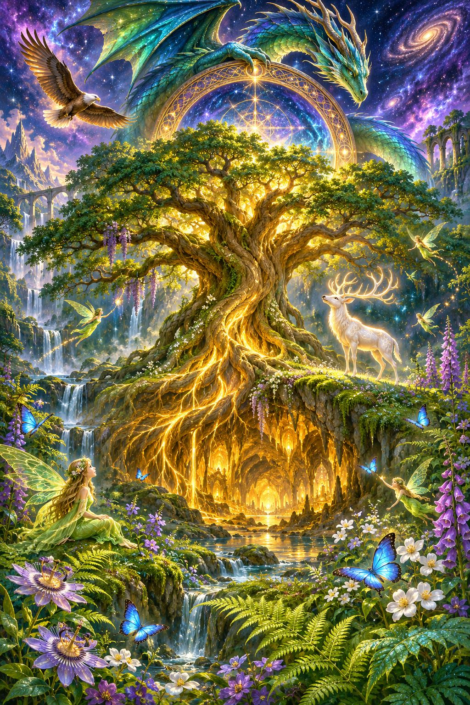

Mes conseils · Récit
Lettre du commandant Cousteau au pape, après son passage au Gabon
« Le Gabon est notre espoir. » Un texte attribué au commandant Jacques-Yves Cousteau.
Partagé par Michael Manzano, thérapeute holistique à Dax ·
Ce texte, attribué au commandant Cousteau, circule depuis de nombreuses années. Sa source n'est pas sûre à 100 %. Mais de nombreux récits évoquent son voyage au Gabon, et ceux qui racontent cette histoire disent que ses compagnons, ses marins, ont vécu la même chose : tous sont revenus de cette initiation et de ce voyage au fond des océans avec une vision du monde différente.
Bonjour Saint-Père,
C'est pour moi un honneur de vous adresser mes salutations les plus respectueuses, à l'aube de ce jour nouveau, étant ici au large des côtes gabonaises. J'ai longtemps navigué et exploré les océans, les mers, les lacs et fleuves du Gabon sans aucun incident qui affecte mon âme ni me frappe l'esprit. Mais depuis que j'ai posé mes premiers pas sur le sol gabonais, je n'ai jamais cessé d'être surpris de voir ce que mes yeux n'ont point vu ailleurs.
Saint-Père, j'ai vu chez les Babongo, qui sont les Pygmées du sud du Gabon, en pays Apindji et en pays Tsogho, peuple bantu de cette région, les blancs très blancs et très blonds sortir des arbres et des plantes en forêt gabonaise, pendant la pleine lune, à 3 h du matin, pour célébrer, danser et chanter le culte du Bwiti, que l'un des leurs appela Dieu, disant « le Bwiti est Dieu » en me regardant.
Ils étaient des milliers dans la forêt, qui dansaient avec des Pygmées le culte de Dieu qu'ils appelaient Bwiti. À l'intérieur comme à l'extérieur du temple, le feu était maître de la cérémonie. Je vis un jeune homme blanc et blond qui vint vers moi et me dit : « Sais-tu pourquoi le feu est maître dans le Bwiti ? » Je lui répondis : « Non, je ne le sais pas. » Et il me dit : « Le feu est maître dans le Bwiti parce qu'il est Dieu, le soleil, le père de toute chose et la vie. »
Ensuite, je lui posai cette question : « Pourquoi mangez-vous et vénérez-vous les racines de cet arbuste, et quel est son nom ? » Il me répondit : « Cet arbuste s'appelle l'Iboga, et il représente le corps sacré du fils de l'homme, Dieu Yah. » « Et ce grand arbre là-bas, qui germa à partir des gouttes de sang de Dieu et qui, lui, représente le sang de son fils, comment l'appelle-t-on ? », lui demandai-je. Il me répondit : « Il s'appelle le Kevazingo, c'est un arbre lunaire qui représente aussi les menstrues de la femme. » Je vis toutes les femmes blanches et pygmées se frotter du kaolin rouge tiré de cet arbre.
Puis le jeune homme me relata cette histoire : Dieu donna le Bwiti et l'Iboga aux Pygmées, qui les donnèrent aux Apindji. L'ayant acquis, ils l'apprirent aux Tsogho qui, à leur tour, l'enseignèrent aux Omyènè, qui le transmirent au peuple chamitique venu du pays de Koush et de la Nubie. Et chez les Fang du culte du Bwiti, Dieu sortit le culte de l'Ombwiri, encore appelé Anenghé, la transcendance, qui est le culte du Saint-Esprit, force agissante de Dieu, et l'épouse de Dieu, Joa Maria. Ainsi est né le Bwiti, l'homme, et l'Ombwiri, la femme ; en d'autres termes, Dieu et Marie. Et de l'union du Bwiti et de l'Ombwiri naquit la doctrine et le culte de la sainte médecine du Jourdain, dont le nom est « Silao Nfoubane Angang », en Guinée équatoriale, dans le village de Nfoua, chez un homme pieux et pur nommé Henrique Nze Avome Bibang.
Voici que je vis, derrière le jeune homme, une femme blanche sortir de la rivière et se transformer en civette. Elle me dit : « Je suis Mouma y Zogho, la femme à qui Dieu transmit le Bwiti en forêt, et qui le transmit aux hommes qui, en l'acquérant, offrirent une liqueur et des présents en secret. Je suis la femme qui donna son âme en offrande à Dieu, et à qui il ôta la vie en prenant son offrande. »
À ces mots, je me réveillai sous la tente dans laquelle je dormais. Je regardai la montre : il était 3 h 30. « Mon Dieu, dis-je, donc je dormais. » Pourtant, cela avait l'air vrai. Et avant que je ne termine ma phrase, je vis un feu follet gigantesque passer dans les bois, sur lequel était assis un vieux blanc. Tout cela se passa dans la nuit du vendredi à l'aube du samedi, quand, en me soulageant, j'aperçus un satyre manger des racines d'Iboga qu'il avait déterrées.
Dans le Haut-Komo, j'aperçus une pirogue naviguant sur les eaux du fleuve Komo, au sud-ouest de la province du Woleu-Ntem. Il était environ 5 h 30 quand je vis la Vierge Marie, vêtue d'habits de peau de gazelle, tenant une cithare entre ses cuisses. Elle jouait de la cithare, assise dans la pirogue que pagayait un homme noir vêtu de raphia.
Après mon exploration des terres gabonaises, je me rendis sur mon bateau pour explorer la mer du Gabon, où je perdis mon âme. J'ai découvert des merveilles sous les eaux de la mer du Gabon, des merveilles uniques au monde. Puis je vis un navire hollandais dans les profondeurs. Je visitai le navire, chargé de biens et d'ossements hollandais, échoué au cœur de cette mer inexplorée et inconnue du monde. Un peu plus loin, je vis de l'or et un trésor enfouis dans une grotte, une grotte grande comme la Calédonie, gardée par un dragon-serpent portant un point rouge sur le front : un dragon vert, couvert d'une plante vert-jaune entourée d'un diamant. Le spectacle de la plante vert-jaune et du diamant reflétait les couleurs de l'étendard national du Gabon.
Comme j'avais très peur, je sortis des eaux. À la tombée de la nuit, je replongeai pour explorer de nouveau la grotte, et je vis sous mes yeux le dragon se transformer en un puissant Sir-Roi : un homme-sirène qui avait le pouvoir d'ouvrir les portes de l'espace et de se rendre dans l'univers quand il le voulait, sous les eaux de l'Atlantique, à travers sa grotte et les portes transdimensionnelles.
Le puissant Sir-Roi me vit et frappa ma caméra de sa queue. Il me saisit et m'emmena vers d'autres dimensions, pour voir des choses que je ne peux mentionner dans cette lettre et que ma langue ne pourra jamais prononcer. Puis il grava mon nom sur une pierre. Et quand je regardai, je vis la date à laquelle j'allais mourir, parce que mes yeux et mes oreilles avaient déjà trop vu et trop entendu. Le puissant Sir-Roi portait un médaillon en or pur, sur lequel il était écrit « Gabon », et au-dessus de l'inscription, il y avait une couronne posée sur un globe terrestre.
Après tout cela, il me laissa regagner les miens, à qui j'ai dû mentir en leur disant que ma caméra avait eu un choc et qu'elle s'était cassée. La vie du cinéaste et océanographe français s'était arrêtée là. Mon âme resta au Gabon, et mon corps ici, en France, où je fus enterré.
Saint-Père, priez pour mon âme qui, hormis les merveilles qu'elle vit, vit également des choses abominables de ce petit pays, première puissance du monde dans sa face occulte, et dans ses mystères innombrables et négligés par le monde. La spiritualité est au cœur des eaux et des forêts gabonaises. Voici la religion du monde où Dieu et les siens se manifestent encore comme autrefois, en pensée, en parole et par l'action. Que l'UNESCO et le Vatican protègent le Gabon contre les oppresseurs et leurs mauvaises pratiques sur cette terre bénie de Dieu ! Que le Vatican et le monde prient à tout jamais pour ce petit pays ; que la Sainte Vierge Marie le chérisse, pour qu'il reste le berceau des connaissances humaines et inhumaines, naturelles et surnaturelles, rationnelles et irrationnelles.
Oui, le Gabon est notre espoir en matière d'intelligence, de savoir et de connaissance des choses ordinaires et extraordinaires. Alors, le monde doit se prosterner devant le Gabon en l'élevant, pour que lui ensuite l'élève. Je souligne dans cette lettre que nul ne volera ni ne prendra quoi que ce soit du Gabon avec force et dédain, si ce n'est en se prosternant avec amour et bonté. Car les Gabonais et le Gabon sont le centre des recherches scientifiques, physiques et métaphysiques. Le Gabon est l'Israël, l'Égypte, la Grèce, l'Inde et la Chine d'hier, réunis en un petit État. Que les royaumes et les empires viennent au secours du Gabon. Que les principautés et les républiques en fassent autant, afin que l'humanité retrouve ses racines, et que la descendance et l'avenir apprennent la véritable histoire de l'humanité, et non celle que nous ont inventée les hommes de science, qui nous inculquent leur imagination et leurs inventions.
Ô, que Dieu m'écoute, et que cette lettre tombe entre de bonnes mains pour qu'elle parcoure la terre entière, afin que tous sachent que Dieu se révèle à qui bon lui semble, quand il le veut, en pensée, en parole et par l'action. Qu'ils sachent également que c'est Dieu l'auteur de toutes choses. Aucune chose ne s'est faite, ne se fait et ne se fera sans que ce soit lui qui l'ait voulu, qui le veuille et qui le voudra. Dieu est le maître des phénomènes ordinaires et extraordinaires. Seul lui peut expliquer pourquoi telle ou telle chose existe ou n'existe pas. Dieu reste notre seul vrai recours, recours que les scientifiques et les savants oublient par orgueil, préférant dédier leurs exploits à leur propre intuition, alors que toute imagination, toute intuition, toute inspiration et toute pensée vient soit de Dieu, soit du Diable, et non de l'homme lui-même.
Voici que je retire ma plume de l'encre, en espérant que Dieu me pourvoira, qu'il défendra ma bonne cause et élèvera mes écrits comme il le fit avec ceux d'Ulysse.
Ainsi soit-il !
L'iboga, plante sacrée du Gabon
L'iboga (Tabernanthe iboga) est un arbuste naturel d'Afrique centrale. Au Gabon, sa racine est au cœur du Bwiti, une tradition spirituelle où elle accompagne les rites d'initiation : ceux qui la reçoivent parlent d'un véritable voyage intérieur, d'une rencontre avec leurs ancêtres et avec eux-mêmes.
Son principe actif, l'ibogaïne, intéresse aussi les chercheurs qui travaillent sur les addictions. Plusieurs études, encore petites et sans groupe de comparaison, ont observé des résultats encourageants :
- Nouvelle-Zélande (2018) : chez 14 personnes dépendantes aux opiacés (comme l'héroïne), une seule prise a réduit le manque, et plusieurs ont arrêté ou réduit durablement leur consommation pendant les 12 mois suivants.
- Mexique (2018) : chez 30 personnes dépendantes aux opiacés, pour qui les autres traitements avaient échoué, le manque et la consommation ont diminué.
- Caraïbes (2018) : dans une clinique de Saint-Christophe-et-Niévès, 191 personnes dépendantes aux opiacés ou à la cocaïne, suivies médicalement, ont vu le manque et l'envie de consommer fortement baisser après le traitement.
- Université Stanford (2024) : 30 anciens militaires traités avec de l'ibogaïne et du magnésium ont vu leurs symptômes de stress post-traumatique, de dépression et d'anxiété fortement diminuer.
Pour l'alcool, les résultats viennent surtout, pour l'instant, d'études sur l'animal.
Important
Ces résultats sont prometteurs, mais ils ne sont pas encore confirmés par de grands essais. L'iboga peut provoquer des troubles graves du rythme cardiaque : des décès ont été rapportés, parfois à faible dose. En France, l'iboga et l'ibogaïne sont classés comme stupéfiants depuis 2007 : leur usage est interdit.
Ce texte est une information, pas un conseil. En cas de dépendance, parlez-en à votre médecin ou appelez Drogues Info Service au 0 800 23 13 13 (gratuit et anonyme, 7 jours sur 7).

Pour aller plus loin
- La lettre telle qu'elle circule — 7 jours info
- Une enquête sur l'origine de la lettre — Gabonreview
- Ibogaïne et dépendance aux opiacés, suivi sur 12 mois — Noller et al., 2018 (Nouvelle-Zélande)
- Les deux études de 2018 sur les opiacés (Nouvelle-Zélande et Mexique) — MAPS
- Ibogaïne, opiacés et cocaïne : 191 personnes suivies — Mash et al., Frontiers in Pharmacology, 2018
- L'étude de Stanford Medicine chez les anciens militaires (2024)
- L'ibogaïne et le cœur : les risques cardiaques — revue scientifique
- Le classement de l'iboga comme stupéfiant en France (2007) — Assemblée nationale